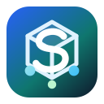

CONTINUITÉ DE SERVICELe réseau est momentanément indisponible
Les écrans déjà chargés et les actions enregistrées sur cet appareil restent disponibles. Reconnectez-vous puis relancez la synchronisation.
Sártal conserve la file locale jusqu’au retour de la connexion.